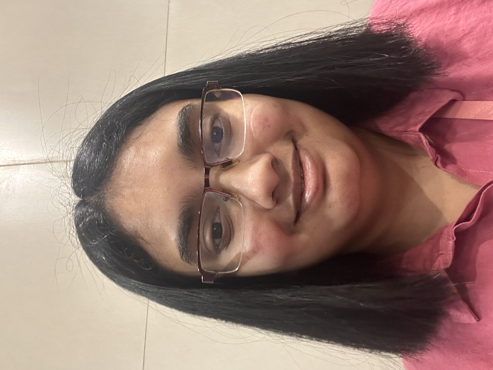

Fathima Zulaikha
Full Stack Developer/Software Engineer

Summary
Passionate Full Stack Engineer skilled in creating aesthetic, functional, and robust websites and web applications.Committed to delivering excellent software solutions while driving innovation and growth in the organization.
Education
Work Experience
-
Web Developer - The Sparks Foundation
Sep 2023 - Oct 2023
- Developed a basic banking website using HTML,CSS,PHP and MySQL.
- Evaluated the task videos of 5+ fellow interns.
-
Core Member - LICET Pattarai
May 2022 - Nov 2022
- Conducted Progress Review meets with all the project teams and committees. Prepared and submitted progress reports based on the same.
- Prepared a Business pitch and wrote Proposal letters for conducting a college level Hackathon as well as for attracting sponsors.
- Performed SWOT analysis after every event conducted.
Skills
- Languages & Frameworks: JavaScript, HTML/CSS, Java, Python, C, React, Bootstrap
- Databases & Technologies: Git/GitHub, MySQL, SQLite, Firebase
- Softskills: Project Management, Proposal Writing, Teamwork, Communication
Achievements & Certifications
- Redhat Certified System Administrator - Redhat (Dec 2022)
- Journey to Cloud: Envisioning Your Solution - IBM (Sep 2023)
- Web Development training course - Yhills (Nov 2022)
Other